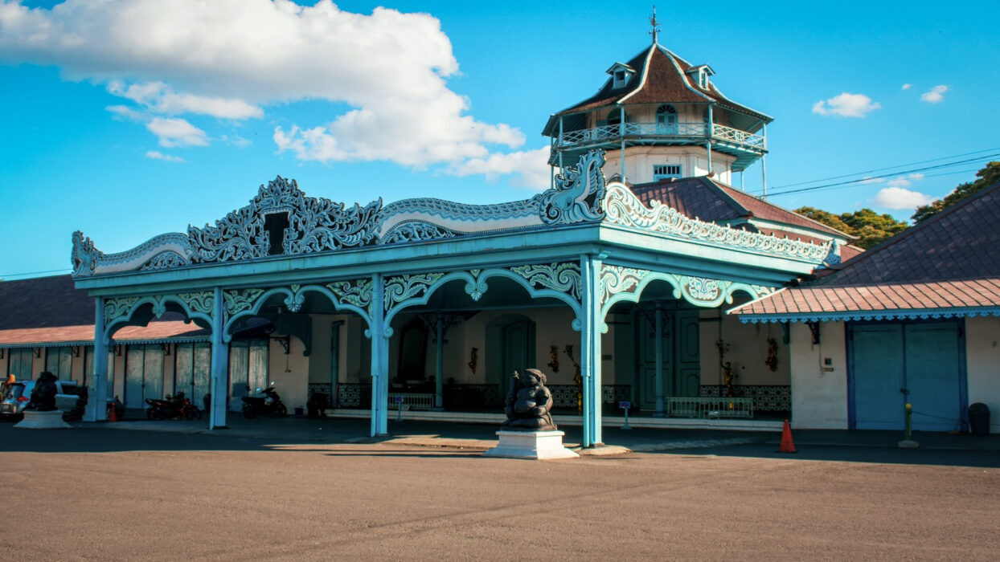

Keraton Surakarta Hadiningrat

Keraton Surakarta Hadiningrat merupakan salah satu peninggalan paling penting dari Kerajaan Mataram
Islam yang masih berdiri dan berfungsi hingga saat ini. Terletak di Kota Surakarta (Solo), Jawa Tengah,
keraton ini menjadi simbol kesinambungan warisan kerajaan Islam terbesar di tanah Jawa sebelum mengalami
pemecahan kekuasaan. Didirikan oleh Sunan Pakubuwana II pada tahun 1744, Keraton Surakarta menjadi
penerus langsung dari Kesultanan Mataram Islam setelah pusat pemerintahan dipindahkan dari Kartasura
akibat konflik dan kerusuhan.
Sebagai bagian dari sejarah panjang Mataram Islam, pendirian Keraton Surakarta tidak dapat dilepaskan
dari latar belakang politik dan sosial yang terjadi pada abad ke-18. Saat itu, Kesultanan Mataram tengah
mengalami ketegangan internal serta intervensi dari pihak kolonial Belanda melalui Vereenigde
Oostindische Compagnie (VOC). Ketegangan ini memuncak dalam Perjanjian Giyanti tahun 1755, yang secara
resmi membagi wilayah Mataram menjadi dua kekuasaan: Kasunanan Surakarta Hadiningrat di bawah Pakubuwana
III dan Kesultanan Yogyakarta di bawah Pangeran Mangkubumi yang bergelar Sultan Hamengkubuwana I.
Dengan demikian, Keraton Surakarta bukan hanya istana kerajaan, melainkan juga simbol warisan politik
dan budaya dari Mataram Islam. Setelah perjanjian tersebut, Surakarta menjadi pusat kekuasaan baru yang
tetap menjaga tradisi pemerintahan Islam-Jawa yang telah dibangun sejak masa Panembahan Senopati dan
Sultan Agung dari Mataram. Struktur pemerintahan, sistem adat, serta nilai-nilai spiritual Islam tetap
dilestarikan dan diterapkan di lingkungan keraton.
Keraton Surakarta memiliki arsitektur khas yang memadukan unsur budaya Jawa dengan pengaruh Islam. Tata
letak bangunan-bangunan utama seperti Alun-Alun Lor, Pagelaran, Pendopo, dan Kedhaton tidak hanya
menunjukkan keindahan estetika, tetapi juga mencerminkan kosmologi Islam-Jawa. Nilai-nilai seperti
kebersahajaan, harmoni, dan ketaatan terhadap Tuhan tercermin dalam bentuk-bentuk simbolik bangunan,
ornamen, serta upacara-upacara yang digelar.
Selain sebagai tempat tinggal resmi raja dan keluarga kerajaan, keraton juga berfungsi sebagai pusat
kegiatan budaya dan keagamaan. Upacara adat seperti Sekaten yang merupakan bentuk dakwah Islam dalam
kemasan budaya Jawa, masih rutin dilakukan hingga kini. Dalam upacara ini, gamelan pusaka dimainkan
untuk
menarik masyarakat datang ke masjid dan mendengarkan ajaran Islam. Hal ini menunjukkan bahwa meskipun
berbentuk kerajaan, nilai-nilai Islam tetap menjadi fondasi penting dalam kehidupan keraton.
Keraton Surakarta juga menyimpan berbagai koleksi bersejarah yang berkaitan dengan Mataram Islam,
seperti keris pusaka, naskah-naskah kuno berbahasa Jawa dan Arab Pegon, gamelan keraton, serta
benda-benda ritual lainnya. Semua ini menjadi bukti fisik sekaligus pengingat akan kejayaan dan pengaruh
Islam dalam tatanan budaya Jawa masa lampau.
Saat ini, Keraton Surakarta telah menjadi salah satu destinasi wisata budaya dan edukasi yang penting di
Indonesia. Ribuan pengunjung datang untuk menyaksikan langsung peninggalan sejarah, pertunjukan seni,
serta mengenal lebih dekat warisan Mataram Islam yang masih dijaga dengan ketat. Fungsi edukatif ini
juga didukung dengan museum keraton dan kegiatan pembelajaran budaya Jawa seperti pelatihan tari,
gamelan, dan aksara Jawa.
Melalui pelestarian fisik, tradisi, dan pendidikan budaya, Keraton Surakarta Hadiningrat membuktikan
diri sebagai salah satu warisan terbesar dari Mataram Islam yang tetap hidup hingga hari ini. Ia tidak
hanya menyimpan sejarah, tetapi juga mewariskan nilai-nilai Islam-Jawa yang luhur kepada generasi masa
kini. Sebagai peninggalan kerajaan Islam, keraton ini menjadi penghubung penting antara masa kejayaan
Mataram Islam dengan perkembangan budaya Indonesia modern.